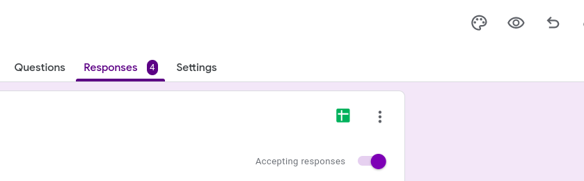

The goal of blog2newsletter is to provide a relatively simple way to send your R based blog posts as emails to subscribers.
Installation
You can install the development version of blog2newsletter from GitHub with:
# install.packages("remotes")
remotes::install_github("rmflight/blog2newsletter")2 Second Overview
- The blog in question has an RSS feed where each entry is essentially the full post.
- Have subscribers and categories they want to know about in a Google Sheet, a copy of which is stored locally as well.
- tidyRSS parses the RSS to get an emailable version of the post, we find subscribers to email based on matching categories, and draft an email.
- gmailr either shows us the draft, or sends the newsletter email, and records that we sent it in the cache so we don’t accidentally send multiples of the same post.
Prerequisites
The current version is based on a particular workflow:
- GMail to send the messages;
- Google Forms and Google Sheets to store the subscriber information;
- Blog RSS feed to generate the content that goes in each newsletter.
This means you need a Google account, and a project, with the Gmail and Google Sheets API authorized. We may eventually change what pieces are needed, but right now, this is what it expects.
The gmailr quick start has a good example of how to set up a project with the right permissions.
Gmail Oauth Scopes
One very important thing to note, is when you do the initial oauth setup, whatever scopes you use then, when you set it up again in the {blog2newsletter} workflow, make sure the scopes is identical, or you will have to do the whole browser oauth flow again (ask me how many times it took before I realized I had a different scope causing this).
For this project, really all you need are the compose and send scopes, so that you can see the draft in Gmail if you want, and send on your behalf, as shown here:
gm_auth(scopes = c("compose", "send"), ...)Google Sheets Oauth Scopes
Similarly, Google Sheets only needs to be able to read the response sheet you are using to record the form responses.
gs4_auth(scopes = "https://www.googleapis.com/auth/spreadsheets.readonly", ...)A Note on Storing the Secrets JSON and Oauth
I definitely recommend having a specific Google project for this so that API secrets don’t need to be shared across projects. In addition, the directory / R project should be on it’s own, not part of your blog directory if you use a static site generator, and committing nothing, except maybe the _blog2newsletter.R script if you really want to. This helps to avoid accidentally committing the secrets and tokens you are generating. Whether part of a blog directory project or not, you can help avoid accidentally commiting them to git using usethis to add the secrets directory to the .gitignore file.
usethis::use_git_ignore("secrets")Subscription Categories
Another aspect that is used heavily are blog post categories. In many cases, blogs use categories so readers can find things that are more interesting to them. For example, I would guess that more people probably read my posts that focus on R (I actually am guessing because I don’t actually track my traffic) than some other categories. Therefore, you can give your potential subscribers categories to choose from.
Here are the categories I put on my own subscription form:
These categories are based on looking at my blog sidebar, and looking at the categories with the most posts.
If you don’t have categories, you can give the option for ALL, and subscribers will get every post.
Getting Setup
Create a Google Form to Store Subscribers
Assuming you have a Google account (which lets face it, is basically assumed for this entire workflow), create a form at https://docs.google.com/forms.
This form should collect emails (seriously, you can’t get an email newsletter without an email address):
Settings -> Responses -> Collect email addresses -> On

If using categories, add your categories as checkboxes so subscribers can choose multiple subjects of posts. If not using categories, I would at least add the option for “All”. Mainly because this first version of {blog2newsletter} checks for that one, and the absence of any other categories means that no one will get your newsletter.
Make sure to put the link to the form somewhere prominent on your blog!
Setup an R / RStudio Project
We are going to pretend we’ve made a project called blog_subscriptions.
Here is the overall file structure that we’ll end up with for this project. Keep in mind that the file names for the secrets and oauth will be different, this just shows where they are in my setup.
├── _blog2newsletter
│ ├── emails
│ └── subscribers
├── _blog2newsletter.R
├── secrets
│ ├── google-project-secrets.json
│ └── gargle_cache
│ ├── gmailr_oauth
│ └── goooglesheets4_oauthGoogle Secrets and Oauth
Download the secrets JSON file from your Google project, and store it in secrets (or your chosen location).
Do the oauth setup for gmailr and googlesheets4. You can do that using the code below, and it should give you a browser window to verify yourself. Once the oauth tokens are stored, you won’t have to do the browser again until the token expires, as long as you don’t change the scopes parameter.
This code, by the way, should always be at the top of either _blog2newsletter.R, or any other script you use to generate the newsletter.
options(
gargle_oauth_cache = "secrets/gargle_cache/",
gargle_oauth_email = "your_email@gmail.com"
)
library(gmailr)
gm_auth_configure(path = "secrets/secrets_file.json")
gm_auth(scopes = c("compose", "send"), email = "your_email@gmail.com")
library(googlesheets4)
gs4_auth_configure(path = "secrets/secrets_file.json")
gs4_auth(
scopes = "https://www.googleapis.com/auth/spreadsheets.readonly",
email = "your_email@gmail.com")Setup the blog2newsletter Cache Folder
There are two files that {blog2newsletter} uses to keep track of things, subscribers and emails.
-
subscribers: stores a local copy of the form submissions from the Google Sheet so you aren’t always fetching a new copy. Defaults to refetching after 168 hours (a week). -
emails: stores what emails you’ve actually sent, so you don’t accidentally send one again, unless you really want to for some reason.
The default location for these is in a folder called _blog2newsletter. Every function that uses the cache, also has a cache argument.
library(blog2newsletter)
b2n_create_cache()If you don’t do this, you will get a message when you go to get subscriber data or draft the email.
Get Subscriber Sheet ID
Now we grab the subscriber sheet ID from Google, and we will copy it into our newsletter script.
sheet_id = googlesheets4::as_sheet_id("urltosheet")
unclass(sheet_id)
# copy this into your script to use for access, or use the URL if you wantYou can see the responses as a Google Sheet by clicking the little sheet icon on your form responses.

And generate an initial cache of your subscriber info.
subscribers_id = "your-sheet-id-from-above"
subscriber_data = b2n_fetch_subscribers(subscribers_id)Blog RSS
If you don’t already have an RSS feed for your blog, you need to set one up if you want to use {blog2newsletter} (see here for quarto blogs, as well as distill and blogdown). Thus far, I’ve only heavily tested {blog2newsletter} using a local RSS feed from a quarto based blog. These RSS feeds basically put the entirety of each post in each entry of the RSS. You should confirm this is the case for your own blog! If it is not, you should change your blog configuration so that the full contents are available at the RSS, and not just a preview or snippet. We query the RSS feed, grab the blog post asked for (typically the latest), and then push it into an email to be sent from GMail However, it works for any RSS feed that {tidyrss} can parse, including any hosted on the web, in case you want to use this for a different blogging platform.
We need to tell our script where the RSS feed lives. For quarto blogs with default outputs, we just need the blog directory. Alternatively, provide the full path to the index.xml file, or the URL of the hosted version are.
# default
blog_dir = "~/path_to/blog_source"
# another local blog source
blog_dir = "~/path_to/blog_source/rendered/index.xml"
# web based
blog_dir = "https://myblog.com/rss.xml"Test Composing and Sending
Finally, we can fetch the blog post and draft the email newsletter we want to send. Note that extra_subject here is whatever subject you want to add to your email, normally as a way to tell those getting the email that it is a newlsetter email. It will be prepended to the title of the post being sent out.
draft_email = b2n_compose(blog_dir,
subscriber_data = subscriber_data,
from_email = "your_email@gmail.com",
extra_subject = "subject")If you want to preview it (and you authorized gmailr with the correct scopes), then you can use b2n_create_draft to push it to your GMail account and preview the email that is in draft_email. This is a thin wrapper around gmailr::gm_create_draft, as blog2newsletter stores the draft email as a list, with the email, and the post data so it can be checked against previously sent newsletter emails.
b2n_create_draft(draft_email)Sending Posts as Emails / Newsletters
The easiest way to semi-automate sending your posts is to put all the necessary code in a .R file with the name _blog2newsletter.R.
This file includes the oauth code we used above, and goes through most of the steps from above.
Here is an example to start from.
library(gmailr)
library(googlesheets4)
library(blog2newsletter)
secrets_path = "secrets/client_secret_file_googleusercontent.com.json"
oauth_cache = "secrets/gargle_cache/"
# don't forget to use your actual email
my_gmail = "my-gmail@gmail.com"
# switch from directory, full path to index.xml, or url as needed
blog_dir = "blog-directory"
# newsletter subject
extra_subject = "my newsletter"
options(
gargle_oauth_cache = oauth_cache,
gargle_oauth_email = secrets_path
)
gm_auth_configure(path = )
gm_auth(scopes = c("compose", "send"),
email = my_gmail)
gs4_auth_configure(path = secrets_path)
gs4_auth(
scopes = "https://www.googleapis.com/auth/spreadsheets.readonly",
email = my_gmail)
subscribers_id = "your-sheet-id"
subscriber_data = b2n_fetch_subscribers(subscribers_id)
draft_email = b2n_compose(blog_dir,
subscriber_data = subscriber_data,
from_email = my_gmail,
extra_subject = extra_subject)
b2n_send_newsletter(draft_email)Then, when you have new post that you want to send, in the subscription project, you only have to do:
blog2newsletter::b2n_run()This source’s the file _blog2newsletter.R by default, and your newsletter is sent or drafted!